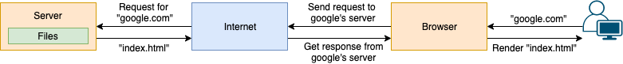

How is this blog set up?
Hey! Welcome here!
In this post, I will briefly introduce you how this blog is set up. I won’t go through every command in the process, but focus on a big picture of the system. When you understand how the whole architecture is formed, you will be able to follow all kinds of tutorials and set up your own.
How is a web page shown to you?
For those who are not familiar with web development, it may be mysterious to you how your computer or phone render a web page to you. Trust me, it’s not hard.
First thing you should understand is that, every webpage is just a HTML file (it may need other files like CSS and JavaScript to help with formatting and dynamic content loading). When you type a URL like google.com in your browser’s address bar, browser will try to find the location that has the corresponding HTML file, which is typically a server. And then fetch it back to your computer, and render its content. That’s it!

There are three key components here,
- A valid URL. It must specify a domain name and an identifier to the file you want. The domain name is used for browser to find the destination server, such as the
google.com. And the identifier is something like/account/addresswhich tells the browser which file to render. Note that in aforementioned example we didn’t specify an identifier, the server will typically return a default file likeindex.htmlwhich points to the main page of the website. It can save you a lot of time by avoiding typinggoogle.com/index.html. - A functioning server. It must be able to listen to requests from browser all around the world, parse the request and understand which file you want, then respond.
- Interesting files. The server must be able to retrieve the files readers are interested in and return to them.
How is this page shown to you?
This page uses the technology provided by Github Pages. In short, Github pages can render the web files in a Github repository with a specific domain name. You don’t need to rent a Virtual Machine, build a server program and buy yourself a domain name. etc. The repository itself is like a server, containing all the files and can return one that in request. Github pages will give you a domain name which is connected to your repo, so that when browser tries to fetch the file from the domain it goes to your repo instead of somewhere else.
In my case, I created this repo especially for web files. And when you type in naiding.github.io, the index.html file in the repo will be retrieved for display in reader’s browser.
Github pages enables you to focus on your own writing without worrying too much about the technology underneath. You can publish your content freely by commiting to the content repo. Such web pages are called static website, because everything about the pages is fixed in the repo, and every reader will get exactly same thing from server after you published it. The advantage of static website is that it’s very simple and fast to retrieve and render. Though the file itself is fixed, with the support of JavaScript, static website can also display content dynamically.
How to create web files?
If you take a look of my repo, you can find the HTML, CSS and JavaScript files there. If you have some frontend development experience, it’ll be easy to understand them. However, do you really need those frondend knowledge to build a blog? Nope! A lot of frontend engineer is working hard to move frontend knowledge away from you. They build something called static website generator, which can transform your writings in plain language to those made sense to browser automatically.
Github pages is natively supported by Jekyll. You can write your blogs in Markdown, which is pretty like plain text but can be rendered with some useful formatting.
This blog is supported by another generator called Hexo. These generators are similar to each other but provide different style of blog theme. You can pick your own one by browsing their webpage. Also you can modify based on their template and configuration files, but it may needs some background knowledge.
Resources
Naiding
Be open-minded.